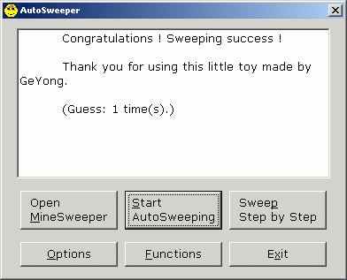

Download link1 Download link2 Online Register Email support

AutoSweeper is a tool to help you playing Minesweeper. It automatically catches the game you are playing, thinking, then operate on the Minesweeper game automatically. It knows almost all the strategy that human use.
For detail information, please see "Readme" file.
Get free register: please read the section "A SPECIAL register method" in "Register" file.